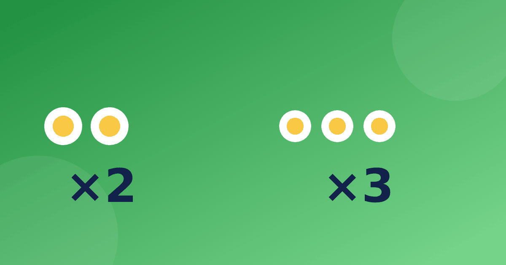

Первые столбики: таблица умножения на 2 и на 3

С чего лучше начинать? Почти всегда с двойки и тройки: примеры маленькие, предметы для счёта всегда под рукой, а понять смысл умножения здесь проще всего. Разберём, как подойти к этим двум столбикам, чтобы они стали фундаментом для остальных.
Таблица умножения на 2 — это удвоение
Умножить на 2 значит взять число два раза или удвоить. Ребёнок давно умеет это делать: 3 + 3, 4 + 4. Покажите, что 2 × 4 — та же запись для 4 + 4 = 8.
Вот весь столбик, который изучает таблица умножения на 2 и 3 в первую очередь: 2, 4, 6, 8, 10, 12, 14, 16, 18, 20. Эти числа ребёнок уже знает как счёт через одно. Заметьте вместе: все ответы чётные, а последние цифры повторяются через пять шагов — 2, 4, 6, 8, 0.
Примеры на предметах: в одной паре два носка, а в 5 парах 10 штук (5 × 2 = 10). Два глаза у 7 человек — 14 глаз. Колёса у 6 велосипедов — 12.
Таблица умножения на 3 — счёт тройками
Тройку проще всего понять как «три предмета в каждой группе». Например, в клевере три листа. Четыре клевера — 12 листьев, и 3 × 4 = 12. Если порядок смущает, вспомните, что 4 × 3 даёт тот же результат.
Столбик: 3, 6, 9, 12, 15, 18, 21, 24, 27, 30. Здесь удобна считалка тройками: «три, шесть, девять» вслух, с шагом по пальцам или по ступенькам лестницы. Спрашивайте и по порядку, и вразбивку.
Полезный приём: умножить на 3 — значит удвоить и прибавить ещё одно число. Так 3 × 7 = 14 + 7 = 21, а 3 × 8 = 16 + 8 = 24. Ребёнок опирается на уже выученную двойку, и это снимает страх перед новым столбиком. Подробно о тройке и делении на неё — в статье про тренировку таблицы на 3.
Что важно понять до заучивания
Прежде чем запоминать, убедитесь, что ребёнок видит смысл записи. 3 × 4 читается как «3 взять 4 раза» или «4 группы по 3». Попросите нарисовать это: 4 кружка, в каждом по 3 точки. Затем посчитайте точки вместе. Если рисунок получился, запись перестаёт быть набором символов, и запоминать её станет проще.
Заодно покажите, что от перестановки результат не меняется: 2 × 5 и 5 × 2 дают 10. Это сразу сокращает работу почти вдвое, ведь половину таблицы ребёнок уже знает.
Как показать оба столбика вместе
Таблица умножения на 2 и 3 хорошо идёт в паре, потому что между ними есть мост. Выложите 12 пуговиц и разбейте их по-разному: на 6 групп по 2 (6 × 2 = 12) и на 4 группы по 3 (4 × 3 = 12). Одно число, два способа. Ребёнок начинает видеть, что в таблице числа живут в нескольких местах, и запоминает их надёжнее.
- 6 = 2 × 3 = 3 × 2
- 12 = 2 × 6 = 3 × 4
- 18 = 2 × 9 = 3 × 6
- 24 = 2 × 12 = 3 × 8
Хорошо работает и «магазин»: положите на стол карточки с ценой 2 или 3 монеты и попросите купить 4, 5 или 7 вещей. Сколько монет нужно? Ребёнок считает группами, а вы записываете это знаком умножения: 5 × 3 = 15. Так абстрактная запись соединяется с понятной жизненной ситуацией.
Типичные трудности
- Ребёнок путает умножение со сложением и отвечает 2 × 3 = 5. Спросите, сколько всего предметов в двух группах по 3.
- Тройка идёт хуже двойки, потому что нет привычного счёта через одно. Помогает считалка и рисунок из групп.
- Ребёнок знает 3 × 4, но не узнаёт 4 × 3. Покажите на том же рисунке, как повернуть группы.
Такие остановки случаются у многих, и обычно хватает ещё нескольких коротких занятий с картинками.
Мини-план на неделю
Занятие должно быть коротким, 5–10 минут, и не каждый день может быть новым. Вот один из вариантов.
- Понедельник — разобрать двойку на предметах, выложить пары.
- Вторник — повторить двойку без предметов, по порядку и вразбивку.
- Среда — познакомиться с тройкой, считать группами по три.
- Четверг — прием «удвоить и прибавить» для тройки.
- Пятница — смешать оба столбика, решить примеры и несколько обратных, например 12 ÷ 3 и 14 ÷ 2.
Если ребёнок застрял, не двигайтесь дальше. Остановитесь на столбике и вернитесь к предметам: наглядность выручает почти всегда. Не ждите, что оба столбика улягутся за один день, и позвольте ребёнку считать на пальцах, пока он не станет отвечать сам. Таблица умножения на 3 порой требует лишней недели, и это нормально. Общий порядок столбиков описан в статье «Как выучить таблицу умножения».
Для домашней практики можно использовать и тренажёр: картинки там показывают группы, занятия короткие, а прогресс хранится на вашем устройстве.